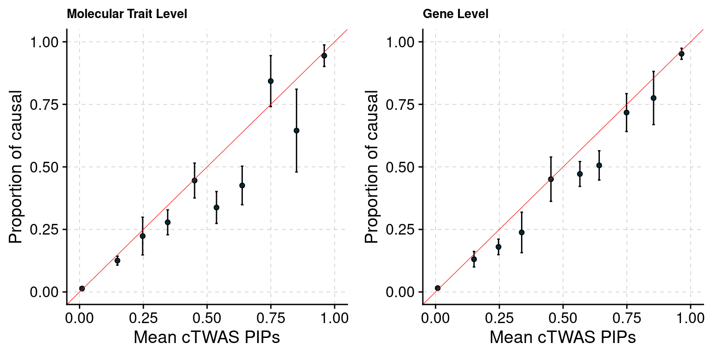
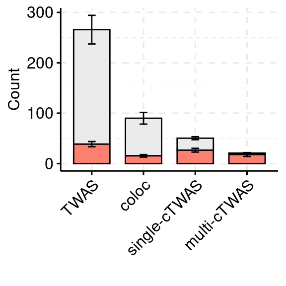
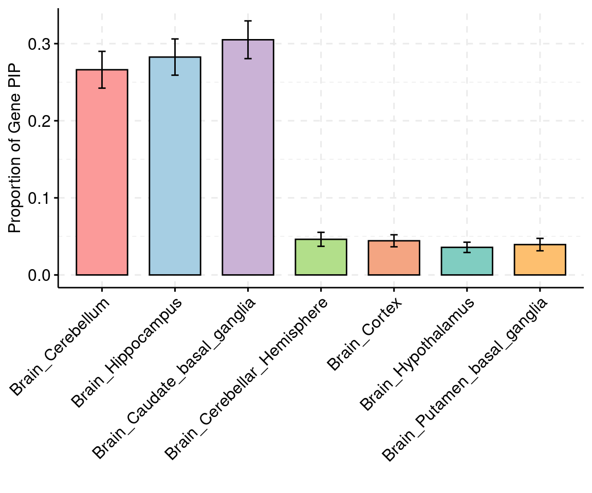
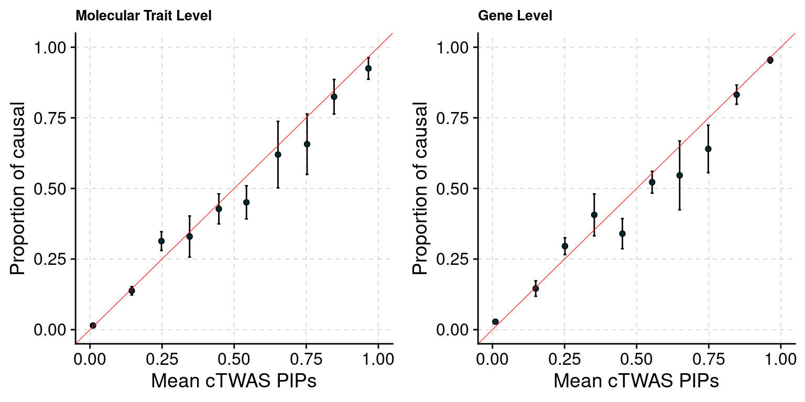

simulation_summary
2024-10-02
Last updated: 2024-11-21
Checks: 6 1
Knit directory: multigroup_ctwas_analysis/
This reproducible R Markdown analysis was created with workflowr (version 1.7.0). The Checks tab describes the reproducibility checks that were applied when the results were created. The Past versions tab lists the development history.
The R Markdown file has unstaged changes. To know which version of the R Markdown file created these results, you’ll want to first commit it to the Git repo. If you’re still working on the analysis, you can ignore this warning. When you’re finished, you can run wflow_publish to commit the R Markdown file and build the HTML.
Great job! The global environment was empty. Objects defined in the global environment can affect the analysis in your R Markdown file in unknown ways. For reproduciblity it’s best to always run the code in an empty environment.
The command set.seed(20231112) was run prior to running the code in the R Markdown file. Setting a seed ensures that any results that rely on randomness, e.g. subsampling or permutations, are reproducible.
Great job! Recording the operating system, R version, and package versions is critical for reproducibility.
Nice! There were no cached chunks for this analysis, so you can be confident that you successfully produced the results during this run.
Great job! Using relative paths to the files within your workflowr project makes it easier to run your code on other machines.
Great! You are using Git for version control. Tracking code development and connecting the code version to the results is critical for reproducibility.
The results in this page were generated with repository version 4d68aa5. See the Past versions tab to see a history of the changes made to the R Markdown and HTML files.
Note that you need to be careful to ensure that all relevant files for the analysis have been committed to Git prior to generating the results (you can use wflow_publish or wflow_git_commit). workflowr only checks the R Markdown file, but you know if there are other scripts or data files that it depends on. Below is the status of the Git repository when the results were generated:
Ignored files:
Ignored: analysis/figure/
Unstaged changes:
Modified: analysis/methylation_analysis.Rmd
Modified: analysis/simulation_summary.Rmd
Note that any generated files, e.g. HTML, png, CSS, etc., are not included in this status report because it is ok for generated content to have uncommitted changes.
These are the previous versions of the repository in which changes were made to the R Markdown (analysis/simulation_summary.Rmd) and HTML (docs/simulation_summary.html) files. If you’ve configured a remote Git repository (see ?wflow_git_remote), click on the hyperlinks in the table below to view the files as they were in that past version.
| File | Version | Author | Date | Message |
|---|---|---|---|---|
| Rmd | c7f17a4 | sq-96 | 2024-10-25 | update |
| html | c7f17a4 | sq-96 | 2024-10-25 | update |
| Rmd | 770965a | sq-96 | 2024-10-25 | update |
| html | 770965a | sq-96 | 2024-10-25 | update |
| Rmd | c3e7a9f | sq-96 | 2024-10-25 | update |
| Rmd | 4585fd7 | sq-96 | 2024-10-04 | update |
| html | 4585fd7 | sq-96 | 2024-10-04 | update |
| Rmd | 3473cf4 | sq-96 | 2024-10-02 | update |
| html | 3473cf4 | sq-96 | 2024-10-02 | update |
| Rmd | bb512bd | sq-96 | 2024-10-02 | update |
| html | bb512bd | sq-96 | 2024-10-02 | update |
| Rmd | 825c543 | sq-96 | 2024-10-02 | update |
| html | 825c543 | sq-96 | 2024-10-02 | update |
| Rmd | e66e456 | sq-96 | 2024-10-02 | update |
| html | e66e456 | sq-96 | 2024-10-02 | update |
| Rmd | 1653f6d | sq-96 | 2024-10-02 | update |
| html | 1653f6d | sq-96 | 2024-10-02 | update |
| Rmd | 48845f9 | sq-96 | 2024-10-02 | update |
| html | 48845f9 | sq-96 | 2024-10-02 | update |
Simulation 1: Four tissues expression trait
Four expression traits from PredictDB are used in this study, which are Liver, Adipose, Lung and stomach. Liver and Adipose are selected as causal tissues, each with 3% PVE and 0.9% prior. Lung and stomach are non-causal tissues with 0% PVE.
Number of causal genes detected
simutag ctwas_detected_genes ctwas_causal_genes total_causal_genes
1 1-1 15 13 140
2 1-2 33 28 180
3 1-3 23 22 156
4 1-4 7 6 126
5 1-5 28 22 154Estimated parameters
PIP Calibration Plot

Compare to other methods (molecular-tissue pair)

Compare to other methods (gene)
Simulation 2: Three tissues expression and splicing trait
A simulation of expression and splicing traits from three tissues is conducted to evaluate cTWAS performance (parameter estimation, PIP calibration …). Three tissues used in this simulation are Liver, Adipose and Lung. Only expression and splicing from liver are causal, each with 3% PVE, 0.9% \(\pi\). SNPs have 30% PVE, 2.5e-4 \(\pi\).
Number of causal genes detected
simutag ctwas_detected_genes ctwas_causal_genes total_causal_genes
1 1-1 22 18 198
2 1-2 15 15 191
3 1-3 21 20 197
4 1-4 19 15 181
5 1-5 13 12 203Compare to other methods
plot_df$method <- factor(plot_df$method, levels=c("TWAS", "single-cTWAS", "multi-cTWAS"))
plot_df$ifcausal <- plot_df$ifcausal + as.numeric(as.factor(plot_df$method))*10
plot_df$ifcausal <- as.factor(plot_df$ifcausal)
library(ggpubr)
| Version | Author | Date |
|---|---|---|
| 770965a | sq-96 | 2024-10-25 |
library(ggpubr)
colset = c("#ebebeb", "#7fc97f", "#beaed4", "#fdc086")
ggbarplot(plot_df,
x = "method",
y = "count",
add = "mean_se",
fill = "method", # Change here to fill by 'method' for different colors per bar
legend = "none",
width = 0.5,
ylab = "Count",
xlab = "",
palette = colset) +
grids(linetype = "dashed") +
theme(axis.text.x = element_text(angle = 45, vjust = 1, hjust = 1)) +
scale_y_break(c(50, 600), space = 0.5, scales = "free")Simulation 4: Seven correlated brain tissues expression trait
A simulation of seven correlated brain tissues is conducted to evaluate cTWAS performance (parameter estimation, PIP calibration …). Three tissues are causal
Number of causal genes detected
simutag ctwas_detected_genes ctwas_causal_genes total_causal_genes
1 1-1 14 11 211
2 1-2 31 26 233
3 1-3 23 19 215
4 1-4 29 28 212
5 1-5 20 16 254Estimated parameters
Compare to other methods (gene)

Simulation 5: seven tissues uncorrelated tissues expression trait
A simulation of seven uncorrelated tissues is conducted to evaluate cTWAS performance (parameter estimation, PIP calibration …). Seven tissues used in this simulation are Liver, Lung, Whole Blood, Adipose Subcutaneous, Artery_Tibial, Heart Left Ventricle and Stomach. Pairwise correlation of gene expression are with 0.6-0.8. The first three tissues are set to be causal, each with 3% PVE, 0.9% \(\pi\) for causal tissues, 0% PVE, 0% \(\pi\) for non-causal tissues and 30% PVE, 2.5e-4 \(\pi\) for SNP.
Number of causal genes detected
simutag ctwas_detected_genes ctwas_causal_genes total_causal_genes
1 1-1 29 26 212
2 1-2 28 23 233
3 1-3 30 29 215
4 1-4 18 17 208
5 1-5 24 21 250Estimated parameters

PIP Calibration Plot of molecular traits
Compare to other methods

Compare to other methods (gene)
PIP partition across tissues

sessionInfo()R version 4.2.0 (2022-04-22)
Platform: x86_64-pc-linux-gnu (64-bit)
Running under: CentOS Linux 7 (Core)
Matrix products: default
BLAS/LAPACK: /software/openblas-0.3.13-el7-x86_64/lib/libopenblas_haswellp-r0.3.13.so
locale:
[1] LC_CTYPE=en_US.UTF-8 LC_NUMERIC=C
[3] LC_TIME=en_US.UTF-8 LC_COLLATE=en_US.UTF-8
[5] LC_MONETARY=en_US.UTF-8 LC_MESSAGES=en_US.UTF-8
[7] LC_PAPER=en_US.UTF-8 LC_NAME=C
[9] LC_ADDRESS=C LC_TELEPHONE=C
[11] LC_MEASUREMENT=en_US.UTF-8 LC_IDENTIFICATION=C
attached base packages:
[1] stats graphics grDevices utils datasets methods base
other attached packages:
[1] dplyr_1.1.4 plyr_1.8.7 plotrix_3.8-2 cowplot_1.1.3
[5] ggpubr_0.6.0 ggplot2_3.5.1 ggbreak_0.1.2 data.table_1.16.0
[9] ctwas_0.4.15 workflowr_1.7.0
loaded via a namespace (and not attached):
[1] backports_1.4.1 BiocFileCache_2.6.1
[3] lazyeval_0.2.2 BiocParallel_1.32.6
[5] GenomeInfoDb_1.34.9 LDlinkR_1.4.0
[7] digest_0.6.37 yulab.utils_0.1.7
[9] ensembldb_2.22.0 htmltools_0.5.8.1
[11] fansi_1.0.6 magrittr_2.0.3
[13] memoise_2.0.1 tzdb_0.4.0
[15] Biostrings_2.66.0 readr_2.1.5
[17] matrixStats_1.4.1 locuszoomr_0.3.5
[19] prettyunits_1.2.0 colorspace_2.1-1
[21] blob_1.2.4 rappdirs_0.3.3
[23] ggrepel_0.9.6 xfun_0.47
[25] callr_3.7.2 crayon_1.5.3
[27] RCurl_1.98-1.16 jsonlite_1.8.9
[29] zoo_1.8-12 glue_1.7.0
[31] gtable_0.3.5 zlibbioc_1.44.0
[33] XVector_0.38.0 DelayedArray_0.24.0
[35] car_3.1-1 BiocGenerics_0.44.0
[37] abind_1.4-5 scales_1.3.0
[39] DBI_1.2.3 rstatix_0.7.2
[41] Rcpp_1.0.13 viridisLite_0.4.2
[43] progress_1.2.3 gridGraphics_0.5-1
[45] bit_4.5.0 stats4_4.2.0
[47] htmlwidgets_1.6.4 httr_1.4.7
[49] pkgconfig_2.0.3 XML_3.99-0.14
[51] farver_2.1.2 sass_0.4.9
[53] dbplyr_2.5.0 utf8_1.2.4
[55] labeling_0.4.3 ggplotify_0.1.2
[57] tidyselect_1.2.1 rlang_1.1.4
[59] later_1.3.2 AnnotationDbi_1.60.2
[61] munsell_0.5.1 pgenlibr_0.3.7
[63] tools_4.2.0 cachem_1.1.0
[65] cli_3.6.3 generics_0.1.3
[67] RSQLite_2.3.7 broom_1.0.5
[69] evaluate_1.0.0 stringr_1.5.1
[71] fastmap_1.2.0 yaml_2.3.10
[73] processx_3.7.0 knitr_1.48
[75] bit64_4.5.2 fs_1.6.4
[77] purrr_1.0.2 KEGGREST_1.38.0
[79] AnnotationFilter_1.22.0 whisker_0.4
[81] aplot_0.2.3 xml2_1.3.3
[83] biomaRt_2.54.1 compiler_4.2.0
[85] rstudioapi_0.14 plotly_4.10.4
[87] filelock_1.0.3 curl_5.2.3
[89] png_0.1-7 ggsignif_0.6.3
[91] tibble_3.2.1 bslib_0.8.0
[93] stringi_1.8.4 highr_0.11
[95] ps_1.7.1 GenomicFeatures_1.50.4
[97] lattice_0.20-45 ProtGenerics_1.30.0
[99] Matrix_1.5-3 vctrs_0.6.5
[101] pillar_1.9.0 lifecycle_1.0.4
[103] jquerylib_0.1.4 bitops_1.0-8
[105] irlba_2.3.5.1 httpuv_1.6.5
[107] patchwork_1.3.0 rtracklayer_1.58.0
[109] GenomicRanges_1.50.2 R6_2.5.1
[111] BiocIO_1.8.0 promises_1.3.0
[113] gridExtra_2.3 IRanges_2.32.0
[115] codetools_0.2-18 SummarizedExperiment_1.28.0
[117] rprojroot_2.0.3 rjson_0.2.23
[119] withr_3.0.1 GenomicAlignments_1.34.1
[121] Rsamtools_2.14.0 S4Vectors_0.36.2
[123] GenomeInfoDbData_1.2.9 parallel_4.2.0
[125] hms_1.1.3 grid_4.2.0
[127] ggfun_0.1.6 tidyr_1.3.1
[129] gggrid_0.2-0 rmarkdown_2.28
[131] MatrixGenerics_1.10.0 carData_3.0-5
[133] logging_0.10-108 git2r_0.30.1
[135] mixsqp_0.3-54 getPass_0.2-2
[137] Biobase_2.58.0 restfulr_0.0.15